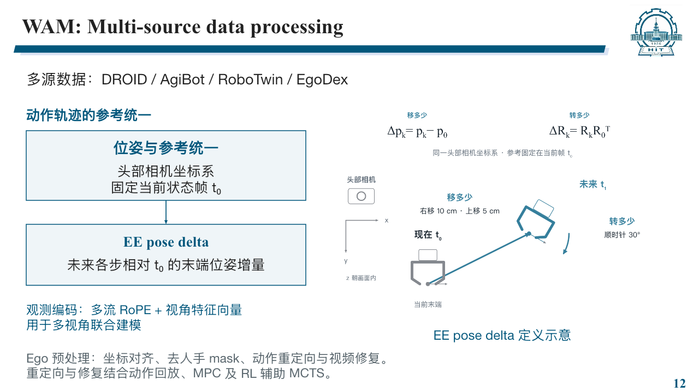
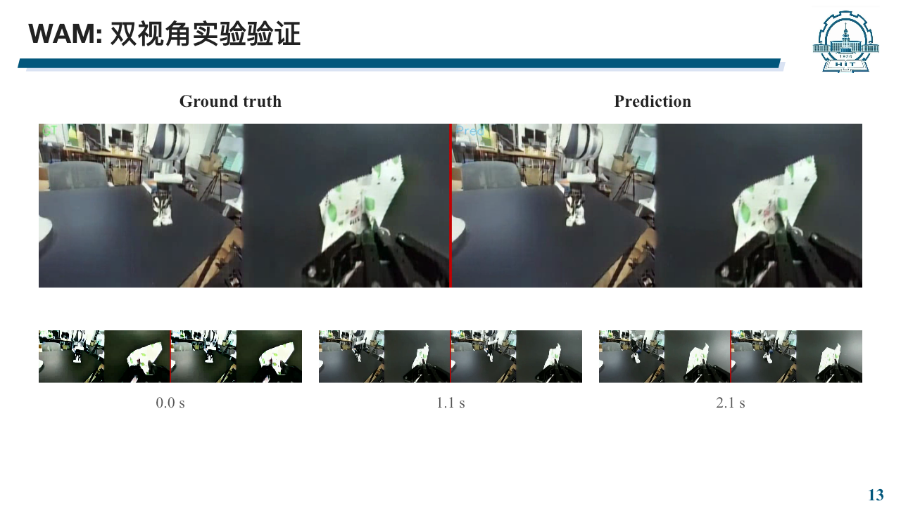
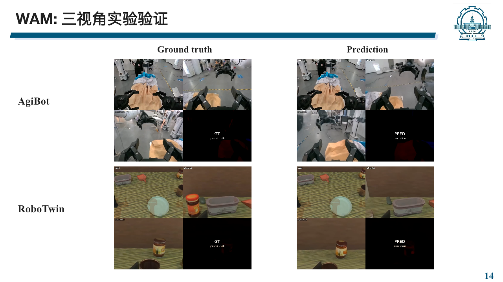

WAM · 视频教师、策略表征与动作预测
智源人工智能研究院（BAAI）· 2026.04–2026.07.28
个人工作：框架设计与实现、异构动作表征统一、Ego 数据处理及实验验证。
返回个人主页教师—学生架构与梯度隔离
训练时，视频教师接收当前观测、语言指令和加噪的未来视频 latent，通过视频预测学习动态信息。PolicyDiT 仅接收当前可获得的观测与语言条件，预测动作相关表征，再交给 ActionExpert 解码动作。

| 损失 | 监督对象 | 更新参数 |
|---|---|---|
L_video | 未来视频预测 | 视频教师 |
L_align | 多层条件帧表征对齐，教师目标侧 stop-gradient | PolicyDiT |
L_action | 示范动作 | PolicyDiT 与 ActionExpert |
部署时移除教师的视频去噪路径，使用 PolicyDiT 一次前向生成表征，再由动作模块多步采样输出动作 chunk。
动作解码的采样次数 N 与输出序列长度 H 分别表示计算步数和动作时间步数。PolicyDiT 的一次表征前向不等于端到端单步推理。
与 DiT4DiT 公开基线的关系
DiT4DiT 公开实现把视频隐藏特征送入动作分支前执行 detach()，使动作损失不会沿该特征路径更新 Video DiT。视频预测损失独立保留梯度，即使采用视频与动作联合损失，视频分支仍可更新。
官方代码版本 66a6f3a：特征 detach、调用时指定 detach=True、联合损失与反向传播。上图 WAM 采用独立的教师—学生表征对齐，L_align 不属于该公开基线。
统一动作表示：EE pose delta
数据来自 DROID、AgiBot、RoboTwin 与 EgoDex。动作侧统一到头部相机坐标系，以当前状态帧 t₀ 为固定参考，表示未来各步末端位置与朝向的变化。


在同一头部相机坐标系中，平移增量为 Δpₖ = pₖ − p₀，旋转增量为 ΔRₖ = Rₖ R₀ᵀ。
观测侧采用多流 RoPE 与视角特征向量进行联合建模。Ego 数据处理包含坐标对齐、人手 mask 提取与去除，并结合动作回放、MPC 和 RL 辅助 MCTS 开展动作重定向与视频修复。
双视角实验验证
左侧为 Ground truth，右侧为 Prediction，每侧包含两路视角；下方展示 0.0 s、1.1 s 与 2.1 s 的对应片段，用于观察物体运动与跨视角事件一致性。


三视角实验验证
上排为 AgiBot，下排为 RoboTwin，左列为 Ground truth，右列为 Prediction。每个拼接画面包含三路相机，黑色格承载 GT / Pred 标签。


动作策略与垂域应用
WAM 在 Franka 平台完成 100 次 rollout，成功率约 80%；另通过新本体后训练学习曲线的坡度对比进行消融。视频对照展示预测结果，动作策略的成功率来自独立任务评测。
DiT4DiT 的主要应用是酒店服务：负责数据采集、模型训练与 OpenArm 真机部署，完成证件交互。OpenArms 双臂叠衣属于复现验证。
查看叠衣复现视频